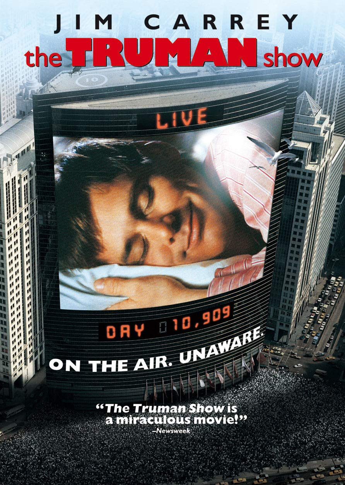
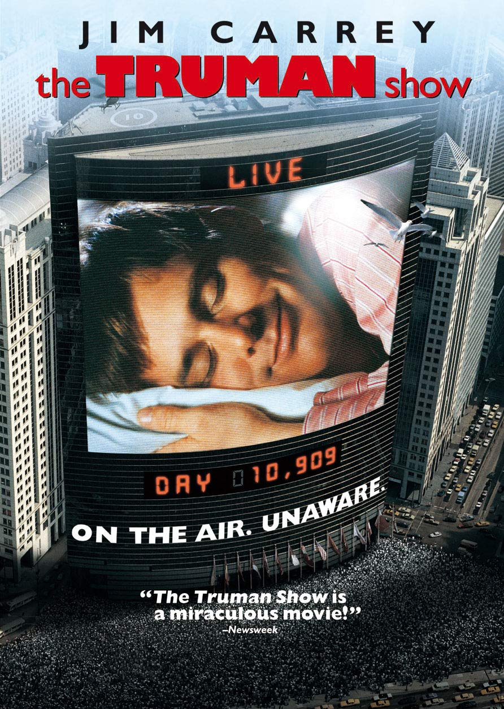

Naci un 26 de mayo de 2001, tengo 19, soy de Santiago, Providencia. Soy deportista, me gusta mucho el Futbol y hacer ejercicios de fuerza tipo crossfit. Me gusta mucho rapear, hablar sobre temas profundos, hacer cosas con mis amigos como ir a carretear, estar con mi polola, leer de vez en cuando y aprender sobre cosas que me gustan. Me considero alguien simpatico, amigable, empatico, responsable, ordenado, cariñoso, y de un caracter marcado que le gusta estar en un buen ambiente. Estoy estudiando Ing. Civil en la UAI, algo que siempre quize, donde tengo planeado ir por Informatica.


Video de un juego que hice, aprovecha de descargarlo, en el video lo explicamos todo!!!
Por que no intentar rapear?, nadie nace sabiendo!!!
3 buenos temas con buenos videos, veelos!!!
------------------------------>
LDN - Lily Allen

------------------------------> Virtual Insanity - Jamiroquai
------------------------------> Dani California - Red Hot Chilli Peppers
Armar un PC, no es tan dificil como parece

| Nombre de la pelicula | Director | Notas |
| El padrino | Francis Cord Copola | Muy buena, buenas actuaciones. Logra hacer todo lo que quiere. Confirmo lo de obra maestra |
| Pulp Fiction | Quentin Tarantino | Inesperadamente buena y adictiva de ver, mezcla de emociones en todo momento junto con sorpresas cada cuadro. |
| Forrest Gump | Robert Zemequis | De mis favoritas, tiene de todo, la actuacion de Tom Hanks es sublime |
| The Truman Show | Peter Weir | Concepto muy interesante y la forma en que se desarrolla es simplemente bueno |
| El viaje de Chihiro | Hayao Miyazaki | La ame en mi infancia. Es una obra de arte, es un mundo que uno no se podria imaginar y que no quiere dejar de ver |


 


Pagina para programar ------> Repl.it
Pagina para conocer HTML y CSS ------> W3school
Pagina para ver los datos mundiales del coronavirus ------> Google News
Pagina para jugar juegos indies ------> Y8 games